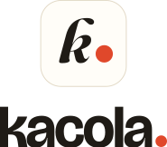
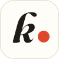
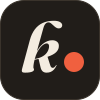
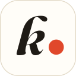
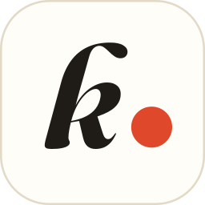

Warm paper, one red dot.
kacola records and transcribes your meetings on your own machine. Its design language is quiet oat and ink,
a confident grotesque, and a single record-red dot that means live. This page is the reference: every
value here is rendered from brand/tokens/tokens.css and the bundled fonts.
01 · Logo
The grotesque stop
The wordmark is kacola in Bricolage Grotesque Bold at −0.04em, closed by a record-red full stop. The icon is an italic Fraunces k with the same dot, on an oat tile. All logo files are outlined — they need no fonts.
wordmark.svgwordmark-dark.svgwordmark-mono.svgwordmark-white.svgLockups
lockup.svglockup-dark.svg
lockup-stacked.svgClear space & minimum size
Keep two dot-diameters clear on every side. Never set the icon below 16px or the wordmark below 64px wide.
Don't

02 · App icon
The italic k
A rounded tile (radius 24%) with a Fraunces Bold Italic k and the record-red dot. At 32px and below a separately drawn version takes over: a sturdier optical size, a bigger k and a dot snapped to whole pixels.
icon.svg
icon-dark.svgicon-mono.svgicon-small.svgSizes


16 · 24 · 32 are rendered from icon-small.svg; the rest from icon.svg. Magnified 16px and 32px:
03 · Colour
Oat, ink and record red
Semantic tokens, never raw hex, in the app. Red is reserved for recording, live state and the brand dot —
red text uses accent.recordText, which clears 4.5:1. Both themes are shown side by side;
values below are read live from tokens.css (toggle high contrast in the top bar).
04 · Typography
Four families, one voice
All SIL Open Font License, bundled with the app — no web fonts at runtime. Tabular numbers wherever a time appears.
Headings · buttons · wordmark
UI text · labels · inputs
Icon k · editorial moments
Timestamps · code · shortcuts
Scale
05 · Space, shape, depth, motion
Soft corners, low shadows, quick easing
Space · 4px grid
Radius
Elevation
e1 cards · e2 popovers, toasts · e3 dialogs. Dark uses black at 2.5×.
Motion
Record pulse · 1.6s
A ring scaling 1 → 1.9 while fading. Off under prefers-reduced-motion.
06 · Components
Core components
Visual specs for the app's building blocks. Behaviour and accessibility come from React Aria; states shown here with forced classes are the same styles as the live pseudo-classes (hover and tab through them).
Buttons
| Variant | Default | Hover | Pressed | Focus | Disabled |
|---|
Sizes · sm 28 · md 36 · lg 44
Icon buttons · 32 · ghost · tooltip required
Record button
Idle
Recording · click to try
Stop
Inputs
Selection
Switch · 36 × 20
Start with calendar events
Offer to record when a meeting begins
Private by default
Hide new sessions from the CLI
Cloud summaries
Needs an API key
Segmented control
List rows · 56
Transcript
Speaker chips · 24
14% tint of speaker.N, an 8px dot in the full colour, name in text.primary.
Citation chip · 20
Pricing moves to per-seat in Q1 [3], with the free tier capped at five recordings a month [7].
“If it isn't private by default, nobody will turn it on.” [12]
Transcript lines
Surfaces & feedback
Design review
- Ship calendar integration behind a flag [2]
- Onboarding copy — Priya drafts by Friday [5]
- Revisit the empty state illustration
Delete this meeting?
The recording, transcript and notes for “Design review” will be removed from this computer. This can't be undone.
Nothing recorded yet.
Start a recording when your next meeting begins — kacola transcribes it on this computer and writes the notes for you.
07 · In context
The main window
Header bar 48px on bg.window, sessions in the sidebar, the transcript in the main pane. Selection is a quiet fill — no left-border accents.